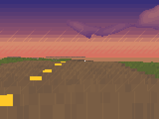
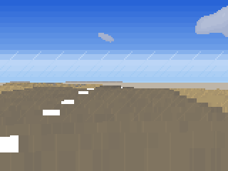
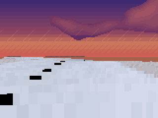
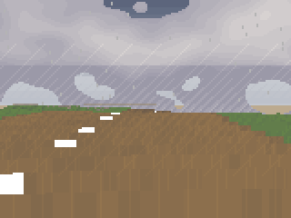
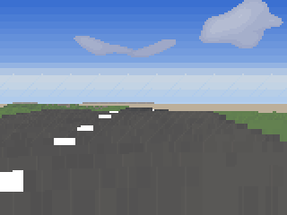
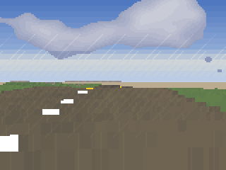

Mantis Rallyan infinite stage that dreams itself
Tip the Core2 forward to gas, pull back to brake, tilt to steer, hold C for the handbrake. Seventeen biomes, branching roads, drifts that stick. Everything is made live on the device.
Flash to Core2
Chrome or Edge, USB cable, hold the device in download mode if needed. Same web installer pattern as Planet and Seadiver.
firmware/firmware-merged.bin with esptool at offset 0.
Drive
Tip forwardThrottle
Pull backBrake
Tilt left / rightSteer
Hold CHandbrake / drift
AHorn
Long-press AMute
Stages
Forest gravel, mountain dirt, coast tarmac, alpine snow, desert track, canyon switchbacks, storm moors, night city, volcano ash — pick a fork and the world commits.





